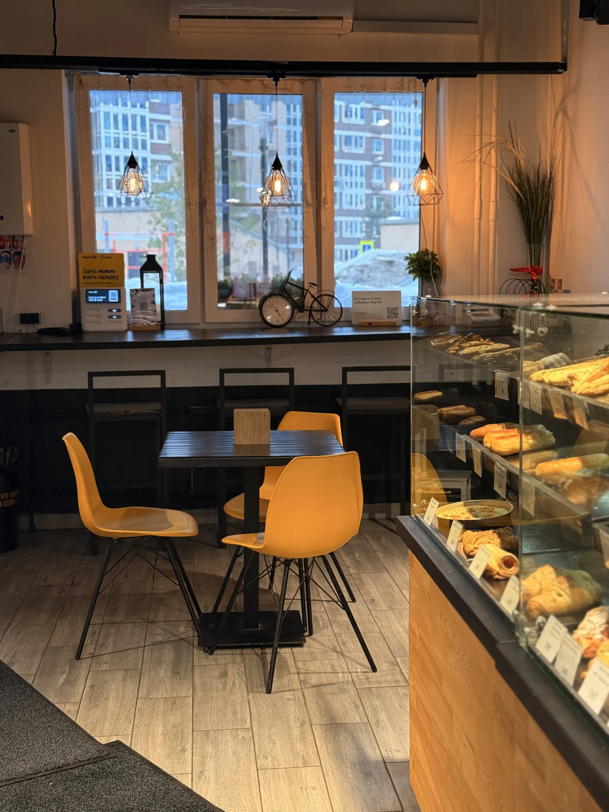
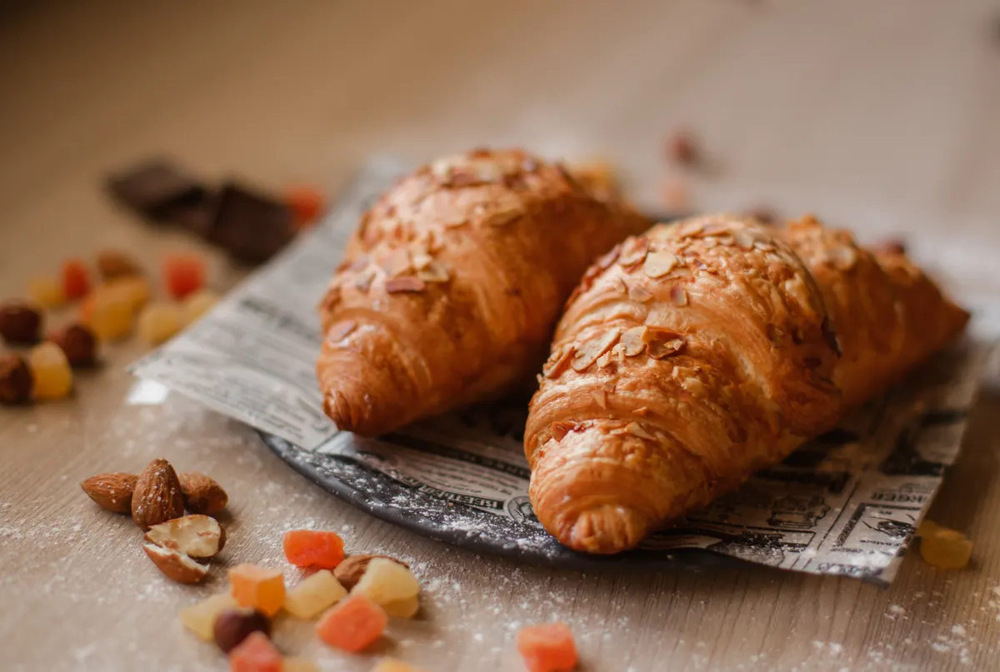
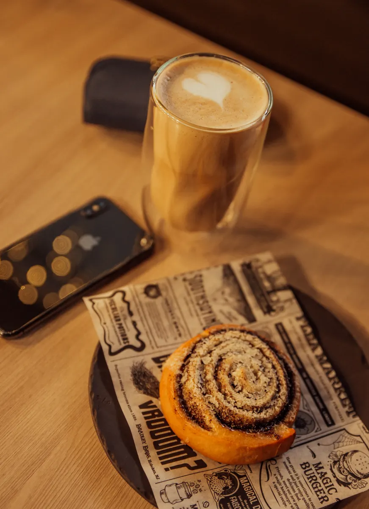
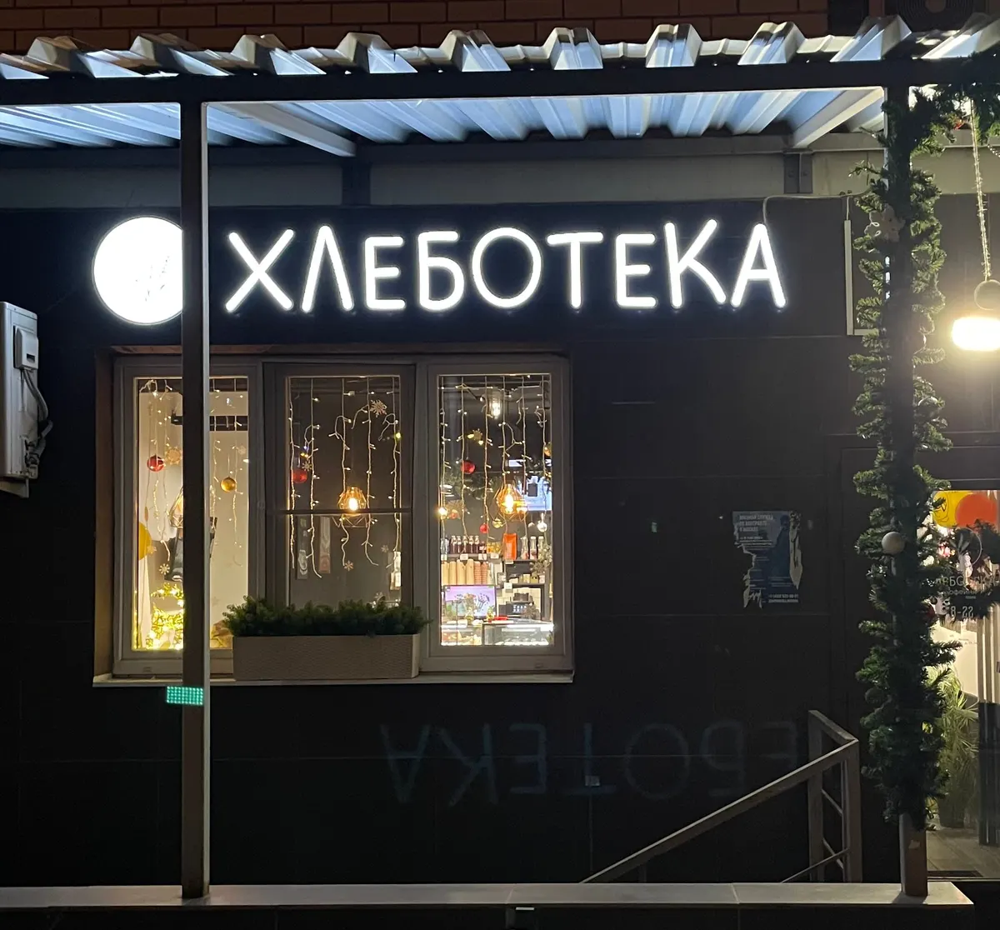

Кофейня-пекарня в ЖК Татьянин Парк · Солнцево
Свежий хлеб и круассаны в Солнцево – рядом с домом
Пекарня, кондитерская и кофейня в ЖК Татьянин Парк. Бездрожжевой хлеб, чиабатта и французские багеты, кофе с собой. Открыто до 22:00.

- Открыто до 22:00
- Кофе и еда с собой
- Можно с собакой
- Детский уголок
Меню
Цены с карточки кафе на Яндекс.Картах. Полный ассортимент свежей выпечки – на витрине, он меняется каждый день.
Кофе и напитки
- Латте0,4 · есть безлактозный285 ₽
- Какао без сахара0,3165 ₽
Выпечка
- Круассан классический120 ₽
- Сочник с творогом100 ₽
Перекус
- Ролл Цезарь с курицей200 г259 ₽
Хлеб, чиабатту, багеты и десерты уточняйте по телефону – выпечка каждый день свежая.
Как это работает
- 01
Зашли
Мы на первом этаже ЖК Татьянин Парк: ул. Татьянин Парк, 14, корп. 4.
- 02
Выбрали у витрины
Что сегодня испекли – то и лежит на витрине. Подскажем, что самое свежее.
- 03
Кофе за пару минут
Латте, какао и чай – здесь за столиком или с собой.
- 04
Здесь или с собой
Внутри столики и детский уголок, всё меню упакуем навынос.



Почему к нам возвращаются
Всегда свежее
Хлеб и выпечку печём каждый день – постоянные гости знают, что утром пахнет сильнее всего.
Круассаны как во Франции
По отзывам гостей: «жирненькие, не пересушенные» – классический за 120 ₽.
Персонал, который помнит вас
Гости пишут о бариста Жанне, Анжелике и Ирине – многих постоянных знают по имени.
Удобно с детьми и собакой
Внутри детский уголок, к собакам относимся хорошо – заходите прямо с прогулки.
Отзывы с Яндекс.Карт
«Офигенный багет, круассаны как настоящие из Франции – жирненькие, не пересушенные, давно такие не ела, хотя круассаны обожаю. Такие же вкусные сочники – творог влажный.»
Елена b. · 26 октября 2025
«Поставлю 5, так как сочетание цена качества очень даже! Покупаю здесь хлеб и выпечку. Круассаны отличные попадались, а хлеб очень хороший!»
Ekaterina Roubleva · 24 августа
«Бариста Жанна великолепная, милая и душевная женщина. Очень гостеприимная, хочется приходить еще.»
Ирина Шагарова · 30 октября
Отзывы с карточки на Яндекс.Картах, без правок.
Контакты
- Адрес
- ул. Татьянин Парк, 14, корп. 4, район Солнцево, Москва
- Часы
- ежедневно до 22:00
- Телефон
- +7 (926) 400-26-01